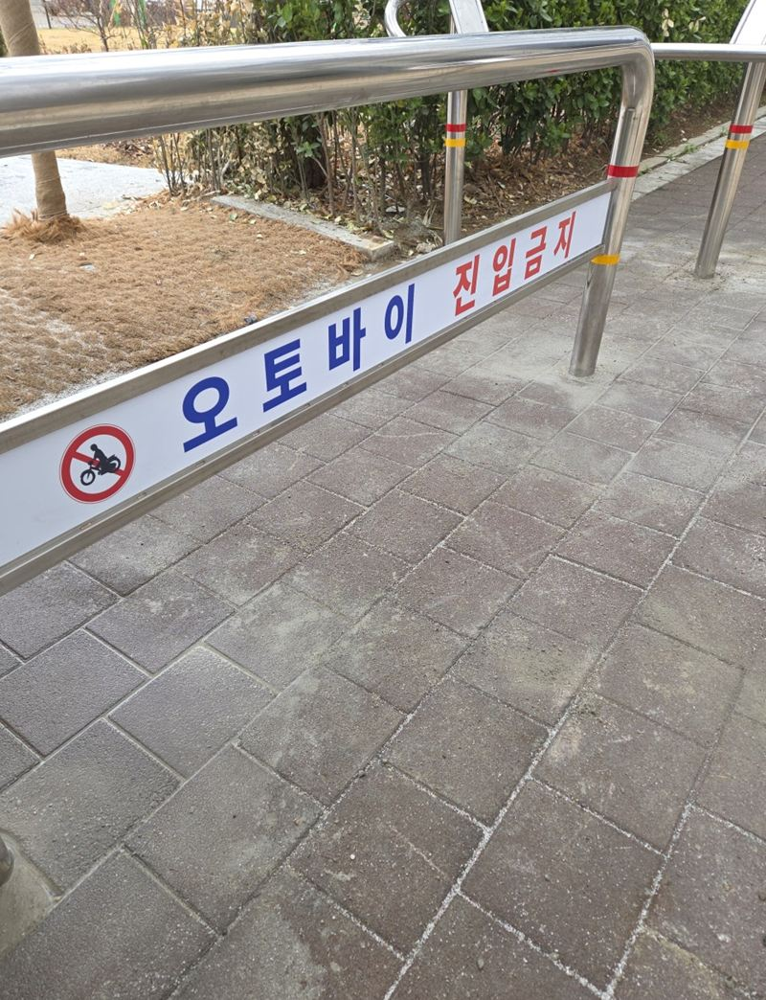
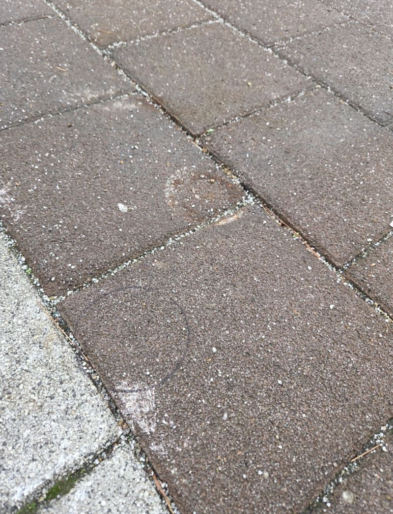
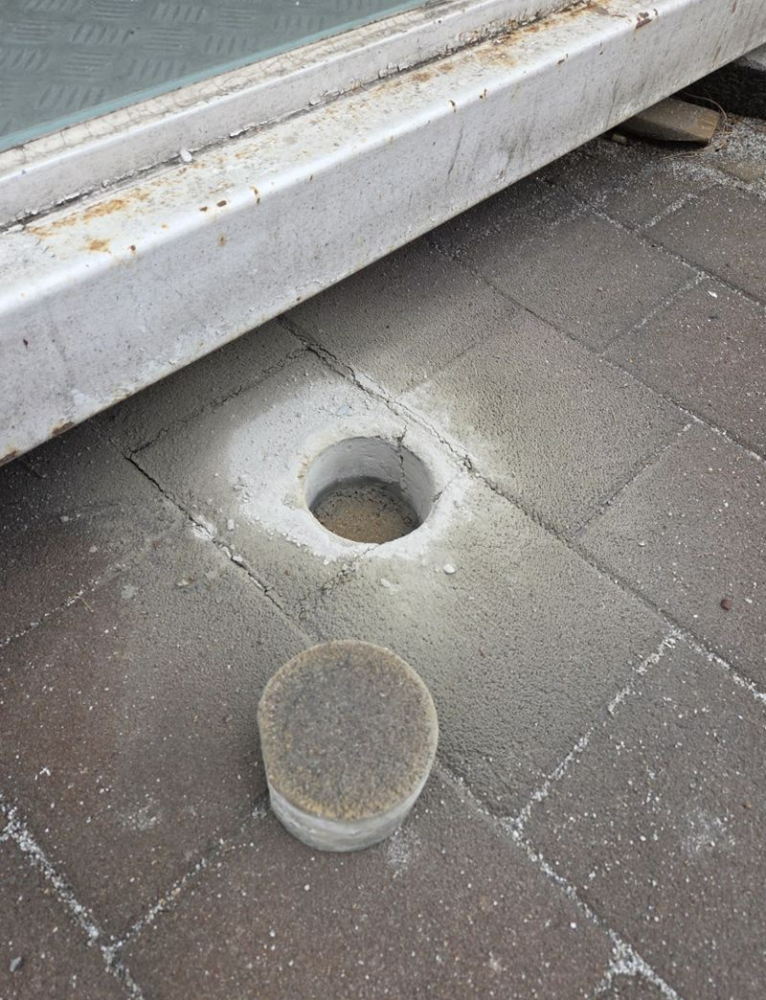
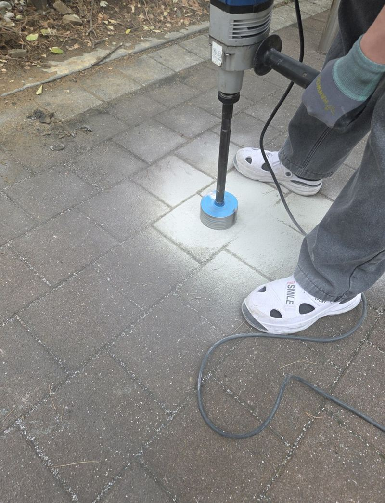
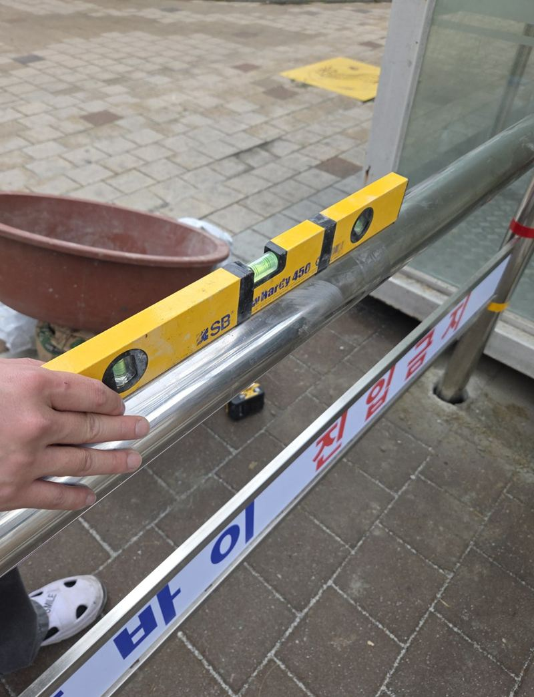
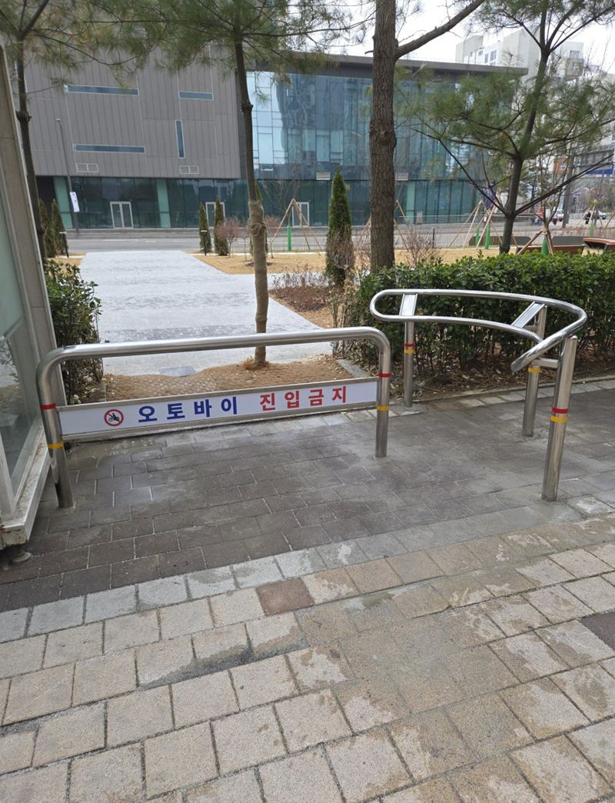

시흥 아파트 보도블럭 타공 후 볼라드 앙카 설치
← 밀어서 전후 비교 →
아파트 쪽문 앞이 넓게 트여 있어서 오토바이와 자전거가 자주 들어오던 단지예요. 입주민 불편이 쌓이고, 아이들이 다니는 길이라 사고 걱정도 컸어요. 사람은 지나가고 오토바이는 못 들어오는 간격을 잡아, 보도블럭을 뚫고 볼라드를 매립 앙카로 세웠어요.
| 현장 | 시흥 배곧동 아파트 단지 쪽문 |
|---|---|
| 문제 | 쪽문 앞 공간이 넓어 오토바이·자전거 진입 |
| 한 일 | 동선 실측 → 간격·위치 표시 → 보도블럭 타공 → 앙카 매립 → 볼라드 고정 → 수평 확인 |
| 방식 | 보도블럭 위 구조라 타공 후 매립 앙카 |
쪽문이 뚫려 있으면 생기는 일
정문은 차단기가 있어도 쪽문은 사람만 다니는 길이라 막아 두지 않는 경우가 많아요. 그 틈으로 배달 오토바이가 지름길처럼 들어오면, 걷는 사람과 같은 길을 쓰게 돼요. 이 단지도 그런 일이 반복돼 물리적으로 동선을 나눌 구조물이 필요했어요.


간격이 전부예요
| 간격이 | 생기는 일 |
|---|---|
| 너무 넓으면 | 오토바이가 사이로 빠져나가요 |
| 너무 좁으면 | 유모차·휠체어·장바구니 카트가 못 지나가요 |
그래서 실제로 지나다니는 동선과 폭을 재고, 걸어서 지나가기에 불편하지 않은 선에서 위치를 표시했어요. 단지 내 규정이나 통행 기준은 관리 주체와 함께 확인하는 게 좋아요.
보도블럭 타공과 앙카 매립
보도블럭은 콘크리트 바닥과 달리 블럭 아래가 모래층이라, 얕게 박으면 흔들려요. 정해 둔 자리를 원형으로 뚫고 아래 지반 상태를 보며 충분한 깊이를 확보한 뒤, 앙카를 매립해 볼라드를 고정했어요. 마지막에 수평계로 기울기를 보고 주변 블럭을 정리했어요.




볼라드가 필요한 단지 출입구
- 쪽문·후문으로 오토바이가 들어와요정문만 막으면 쪽문으로 몰려요.
- 보행로가 지름길이 됐어요단지를 가로지르는 배달 동선을 끊을 수 있어요.
- 놀이터 근처 길이에요아이들 동선과 이동 수단을 나누는 게 우선이에요.
- 안내판만으로는 효과가 없어요구조물이 있어야 실제로 줄어요.
볼라드 설치 전 관리사무소 체크
- 입주민 공지타공 소음이 나니 작업일을 미리 알려 주세요.
- 굳는 동안 보호매립부가 자리 잡을 때까지 주변에 라바콘을 둬요.
- 통행 폭 기준휠체어·유모차 폭이 남는지 함께 확인해요.
아파트 볼라드 질문
자전거도 막히나요?
간격에 따라 자전거는 끌고 지나갈 수 있게 하기도 해요. 원하는 통행 범위를 알려주세요.
휠체어는 지나갈 수 있나요?
휠체어와 유모차가 지나갈 폭을 먼저 확보하고 위치를 잡아요.
블럭이 깨지지 않나요?
필요한 크기만 원형으로 뚫어 주변 블럭은 그대로 둬요.
설치 후 위치를 옮길 수 있나요?
매립식은 옮기기 어려워서 위치를 정할 때 신중하게 봐요. 바꿀 일이 있을 것 같으면 탈부착형을 검토해요.
입주자 동의가 필요한가요?
공용부라 관리 주체의 결정이 필요해요. 의뢰 전에 확인해 주세요.
안내 스티커도 붙여 주나요?
"오토바이 진입금지" 같은 문구를 함께 붙이면 효과가 좋아요.
기존 볼라드 교체도 하나요?
부러지거나 기운 볼라드를 빼고 새로 세우는 작업도 해요.
다른 볼라드 현장
- 동탄 오토바이 진입금지 매립 볼라드 설치 기준
- 관악 오토바이 진입금지 구조물 설치 방법
- 평택 매립 볼라드 파손 시 철거·재시공 방법
- 용산 스텐 U자 볼라드 한두 개 설치 작업
- 부천 볼라드 설치 비용과 종류 · 블로그
- 분당 도로 규제봉 앙카볼트 교체 방법 · 블로그
- 군포 주차 카스토퍼 설치 비용과 주의사항 · 블로그
- 평택 보도블럭 볼라드 매립 깊이와 시공 방법 · 블로그
- 평택 아파트 차선 규제봉 파손 교체 방법 · 블로그
- 평택 이동형 브라켓 매립식 볼라드 설치 비용 · 블로그
- 평택 일자형 볼라드 고리 연결로 출입 막는 방법 · 블로그
- 양천 주차 진입금지 U자 볼라드 설치 목적과 방법 · 블로그
- 양평 도로 안전봉 설치·교체 작업 방법 · 블로그
막고 싶은 출입구 사진과 대략적인 폭을 알려주세요.
전화 상담 010-4517-9872